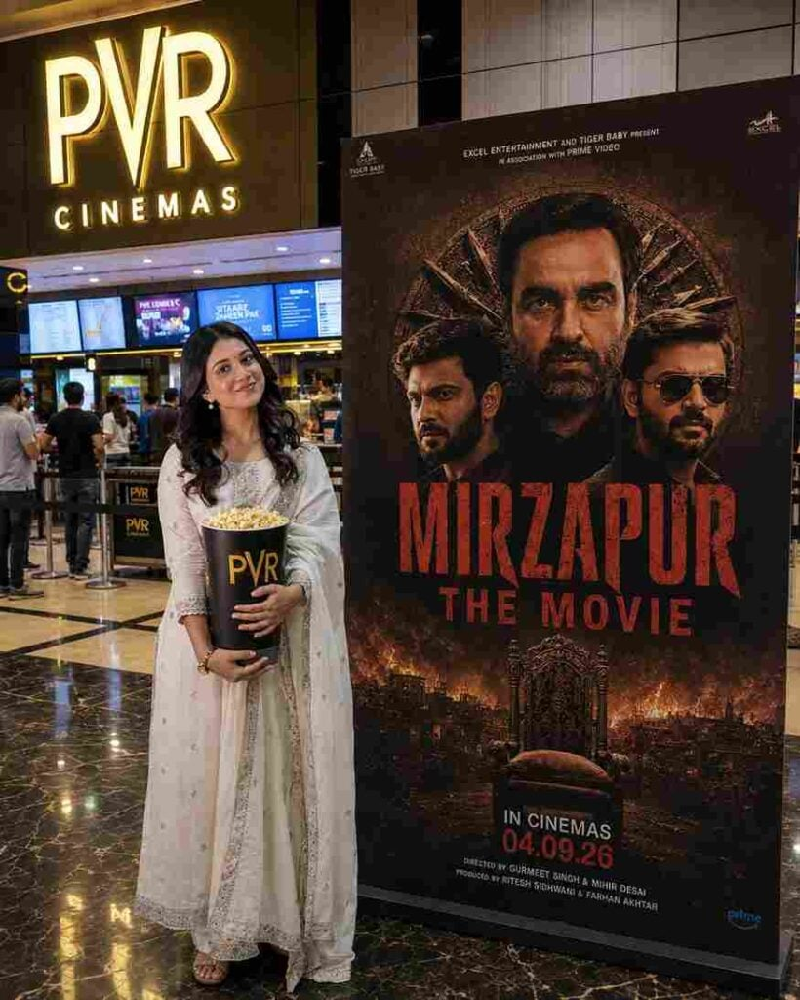
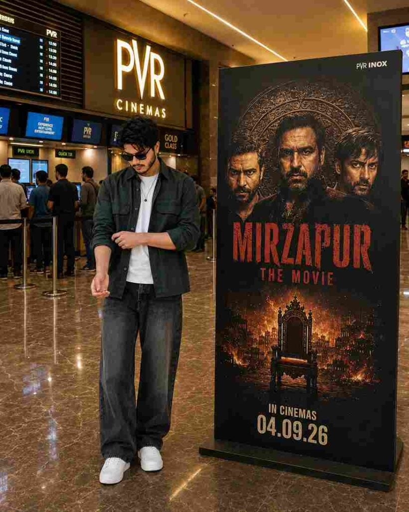

The Mirzapur Movie Poster Editing Prompt 2026 is a creative way to turn your normal photo into a cinematic movie-poster-style image using AI. With your own photo as the main reference, you can create a realistic cinema lobby scene with a promotional poster, dramatic lighting, and a premium background. The prompt is designed to keep your original appearance recognizable while adding a cinematic atmosphere around you. If you enjoy AI photo editing and movie-inspired designs, this editing idea can help you create an eye-catching 4:5 image for Instagram posts, thumbnails, or creative content.
What Is Mirzapur Movie Poster AI Editing?
Mirzapur Movie Poster AI Editing is a photo recreation style that combines your uploaded picture with a cinematic poster environment. Instead of manually designing the complete scene, you can provide an image and describe the background, lighting, composition, and poster placement through a detailed prompt. The AI then creates a new version based on those instructions. You can keep the person’s original clothing, pose, facial appearance, and overall look while adding a modern cinema lobby and movie-poster-inspired surroundings. This makes the process easier for people who want a creative result without complicated editing software.
Best Mirzapur Movie Poster Editing Prompt
Use the prompt below with your uploaded reference image:
Want more awesome prompts?
Join our community and get the latest viral prompts daily.
Follow on Instagram

How to Create Mirzapur Movie Poster Photo
Creating this type of AI photo is very easy. Just follow the steps below:
- Open your preferred AI image-editing tool.
- Upload a clear photo of yourself.
- Copy the Mirzapur Movie Poster Editing Prompt.
- Paste the prompt along with your uploaded photo.
- Generate the image.
- Check your face, clothing, hands, and body proportions.
- Check the cinema lobby and poster placement.
- Ask the AI to correct anything that looks unnatural.
- Save your final 4:5 image.
Choose a Clear Reference Photo
Your reference photo plays an important role in the final result. Try to use a clear image where your face, hairstyle, clothing, and body proportions are easy to see. A full-body photograph is useful when you want the final composition to show your complete outfit and shoes. Avoid extremely blurry or heavily edited photos because important details may be difficult for the AI to understand. If you want your appearance to remain consistent, clearly mention the details that should stay unchanged in the prompt.
What Is ChatGPT?
ChatGPT is an AI assistant developed by OpenAI that you can use for everyday tasks such as asking questions, writing content, learning, planning, solving problems, and getting creative ideas. You can simply type your question or instruction in normal language, and ChatGPT will respond based on your request. It can also work with images and files and, depending on your plan and available features, can search the web, create images, analyze data, and use voice conversations.
Tips for Better AI Photo Results
If the first result is not perfect, make small changes instead of rewriting the entire prompt. For example, you can ask the AI to improve the hands, correct the clothing, brighten the face, or adjust the poster position. Check important areas such as the eyes, hands, shoes, clothing, and body proportions after every generation. You can also try different lighting levels or background details while keeping the main identity instructions unchanged. Using a high-quality reference photo and giving clear instructions can help you achieve a cleaner and more natural-looking result.
Mirzapur Movie Poster Edit for Social Media
The Mirzapur Movie Poster Editing Prompt 2026 can be used to create creative visuals for Instagram posts, thumbnails, editing tutorials, and personal social media content. The 4:5 vertical format is suitable for many portrait-style social media posts because it provides enough space for both the person and the poster. Keep the main subject clearly visible and avoid covering important facial details with text or background elements. You can also create multiple versions with slightly different lighting and compositions and choose the one that looks best.
Final Words
The Mirzapur Movie Poster Editing Prompt 2026 is an easy way to create a cinematic poster-inspired photo using your own reference image. With a detailed prompt, you can combine your original appearance with a realistic cinema lobby, promotional poster, balanced lighting, and professional photography details. Start with the prompt provided above and make small adjustments if any part of the generated image needs improvement. I hope this article helps you create your desired cinematic AI photo.